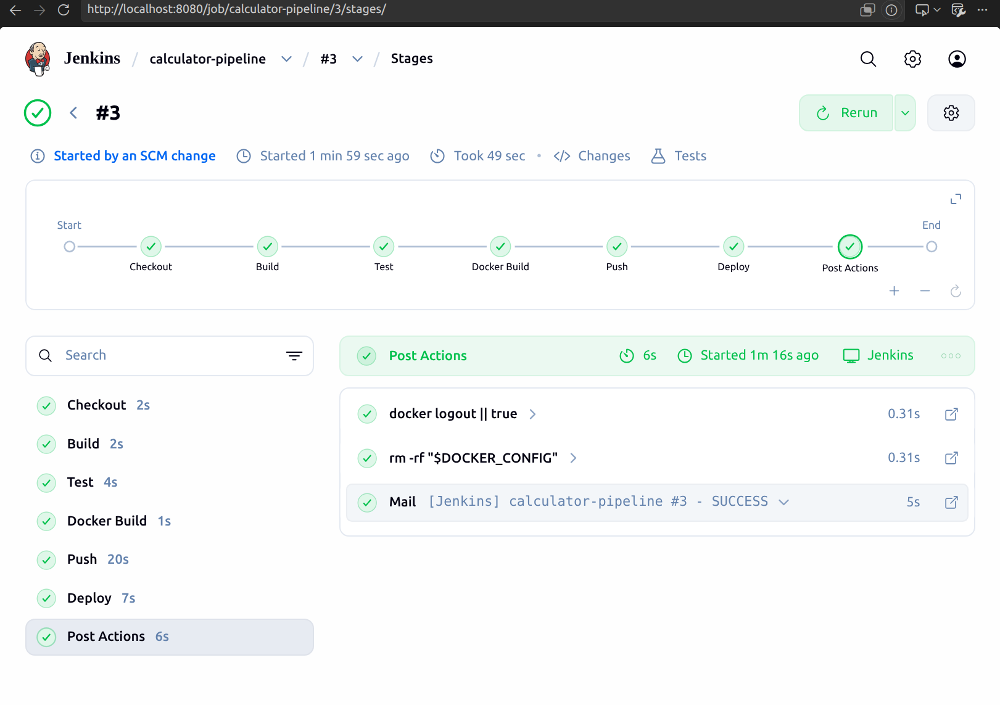
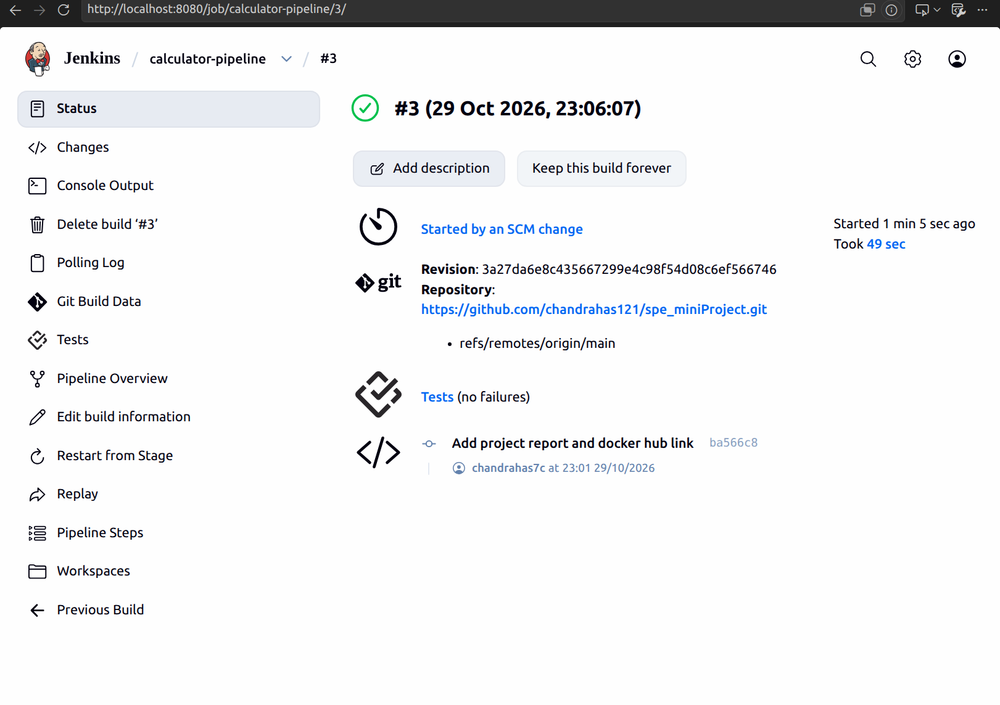
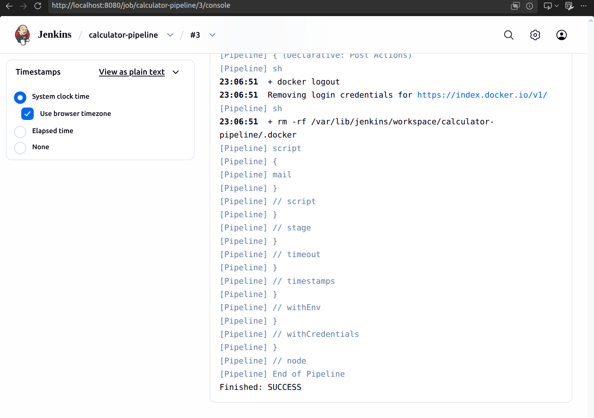
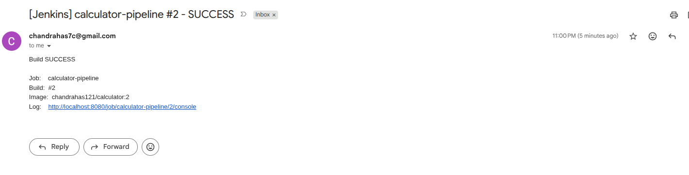
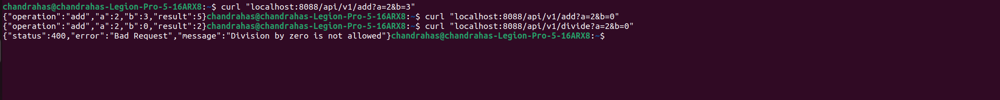
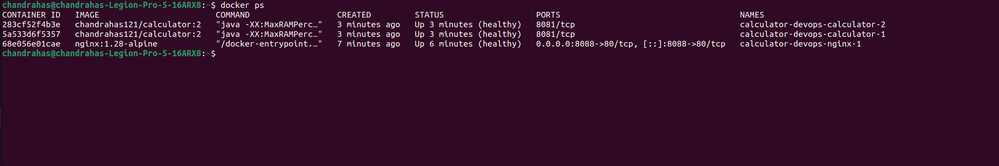

A small calculator REST API written in plain Java (the JDK's built-in HTTP server, built with Maven, tested with JUnit 5) is wrapped in a fully automated pipeline. A push to GitHub starts a Jenkins pipeline that builds the code, runs the tests, builds a Docker image, pushes it to Docker Hub and deploys it with Docker Compose behind an nginx reverse proxy, without any manual step. The application is deliberately simple; the effort went into the automation around it.
| Endpoint (all GET) | Behaviour |
|---|---|
/api/v1/add subtract multiply divide ?a=&b= | JSON reply such as {"operation":"add","a":2,"b":3,"result":5}. Numbers are BigDecimal, so 0.1 + 0.2 is exactly 0.3; division is rounded to 16 significant digits. |
| Bad input | HTTP 400 with a JSON body for a missing or non-numeric parameter, NaN, absurd exponents such as 1e999999999, and division by zero. Unknown paths give 404, non-GET methods give 405. |
/actuator/health | {"status":"UP"}, used by the Docker/Compose health checks and by the Deploy stage. |
Tests: 28 JUnit 5 tests run by mvn test: 14 unit tests of the calculator (every operation, decimals, negatives, both divide-by-zero cases) and 14 integration tests that start the real server on a random port and call it with java.net.http.HttpClient. Surefire writes JUnit XML to target/surefire-reports, which Jenkins publishes.
Note on the framework: the problem statement mentions Spring Boot. Following the TA's instruction to keep the application a simple Java program, the framework was dropped. The REST endpoints, the /actuator/health URL, Maven packaging and JUnit XML reporting are unchanged, and the MockMvc test became an HTTP integration test.
| Stage | What it does | Notes |
|---|---|---|
| Checkout | checkout scm pulls the latest commit of main. | Triggered by githubPush(); pollSCM every 5 min as fallback. |
| Build | ./mvnw -B clean package -DskipTests produces target/calculator.jar. | Maven wrapper, so Jenkins needs no Maven install. |
| Test | ./mvnw -B test, then the junit step publishes the XML reports. | A failing test fails the build; results are still published. |
| Docker Build | docker build tagged chandrahas121/calculator:<build number> and :latest. | Multi-stage Dockerfile (section 5). |
| Push | docker login with the Jenkins-managed credential dockerhub-creds, then push both tags. | Token never in the repo or the log (masked). The login lives in a per-build DOCKER_CONFIG folder that is deleted afterwards. |
| Deploy | IMAGE_TAG=<build number> docker compose up -d --no-build, then polls http://localhost:8088/actuator/health until it answers UP (60 s limit). | Re-runnable: unchanged containers are left alone. The build fails if the health check never passes. |
| Post | E-mail on success and on failure, docker logout, cleanup. | Mail errors are caught so a notification problem cannot fail a good deploy. |
Other options: builds never run concurrently (two deploys would fight over the ports), 20-minute timeout, last 15 builds kept, timestamps in the log.
maven:3.9-eclipse-temurin-21 stage builds the JAR (pom.xml is copied first so the dependency layer stays cached); the runtime stage is eclipse-temurin:21-jre-alpine and copies only the JAR. Non-root user, explicit EXPOSE 8081, exec-form ENTRYPOINT so docker stop reaches Java, and a .dockerignore. A single docker run -p 8081:8081 serves the API.calculator with 2 replicas, a health check on /actuator/health, restart: unless-stopped and a PORT variable; service nginx (port 8088) that waits for healthy replicas and balances round-robin (the X-Upstream header shows which replica answered); network calculator-net. One docker compose up -d starts everything.up -d changes nothing; a new image tag recreates only the calculators while nginx keeps serving; a crashed replica restarts automatically.Feature branches (calculator-api, docker-compose, jenkins-pipeline, report) are merged into main with merge commits, using small commits with plain messages. .gitignore covers target/, IDE files, .env and keys. No credential is in the repository: the Docker Hub token and the notification address live only in the Jenkins credentials store.
| Problem | Solution |
|---|---|
| Jenkins already occupies port 8080. | App on 8081 inside the container, nginx published on 8088. |
Docker pulls failed on the development machine: its Docker config pointed to a missing credential helper (docker-credential-desktop). | The pipeline uses its own DOCKER_CONFIG folder in the workspace, so it does not depend on any user-level Docker config. |
Jenkins could not run docker (permission denied). | Added the jenkins user to the docker group and restarted the service. |
| Compose names the project after the folder. The Jenkins workspace folder differs, so a deploy would have started a second stack fighting for port 8088. | Fixed the project name (name: calculator-devops) in the compose file. |
| nginx resolved the replica addresses only at start-up, so after a redeploy (new container IPs) it pointed at dead addresses. | Variable proxy_pass with Docker's resolver (127.0.0.11, 5 s validity), so addresses are re-resolved while running. |
Gmail refuses normal account passwords for SMTP (error 535). Jenkins' "Test configuration" button does not save the settings, so the first build fell back to localhost:25. | Use a Google app password (needs 2-step verification) and press Save after the test. The mail step is wrapped in try/catch so a mail problem never fails the deploy. |
| A pipeline cannot be fully tried without running it. | The Jenkinsfile was checked with Jenkins' declarative linter and run once in a disposable Jenkins container with dummy credentials (stage order, credential masking, JUnit publishing, failure path) before the real run. |
Builds #1 to #3 of the calculator-pipeline job finished SUCCESS. Build #3 was started automatically by an SCM change after a push to main, ran all stages in 49 s and published the JUnit results with no failures (Fig. 2–4). Docker Hub (public) holds chandrahas121/calculator with the tags 1, 2, 3 and latest. The stack is running with nginx and both replicas healthy, and the API answers through port 8088 (Fig. 6–7). The status e-mail arrives after each build (Fig. 5). The screenshots are on the next page.


main; Tests (no failures).
docker logout, removal of the temporary Docker config, Finished: SUCCESS.| Requirement | Evidence |
|---|---|
| All pipeline stages working | Fig. 2, Fig. 4 |
| Automatic trigger from GitHub | Fig. 3 (SCM change) |
| JUnit results published | Fig. 3 (Tests) |
| E-mail notification | Fig. 5 |
| API responses, incl. 400 error | Fig. 6 |
| Containers running and healthy | Fig. 7 |
Fig. 5 and Fig. 7 were captured after build #2 (image tag 2); build #3 ran the same pipeline and deployed tag 3.

chandrahas121/calculator:2 and a link to the log.
add, add with b=0, and divide by zero, which returns the JSON 400 error.
docker ps: two calculator replicas and nginx (port 8088), all (healthy).